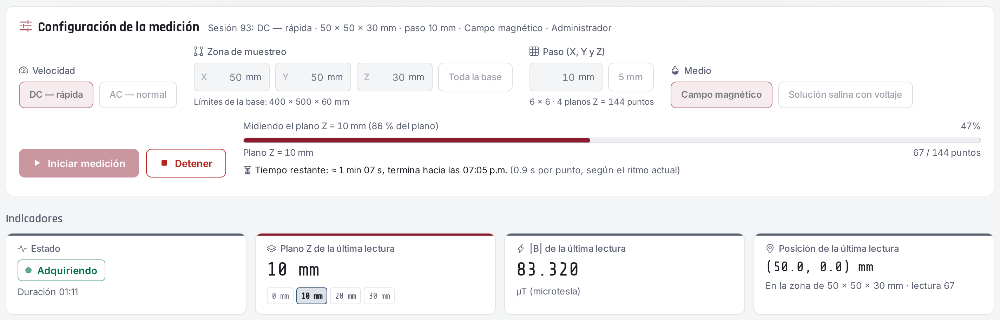
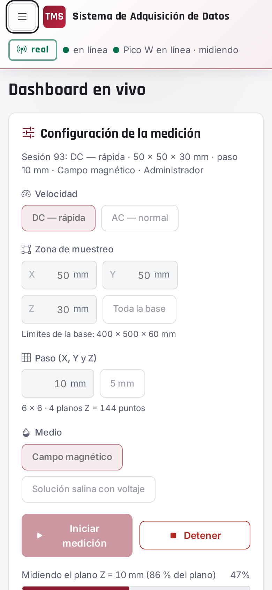
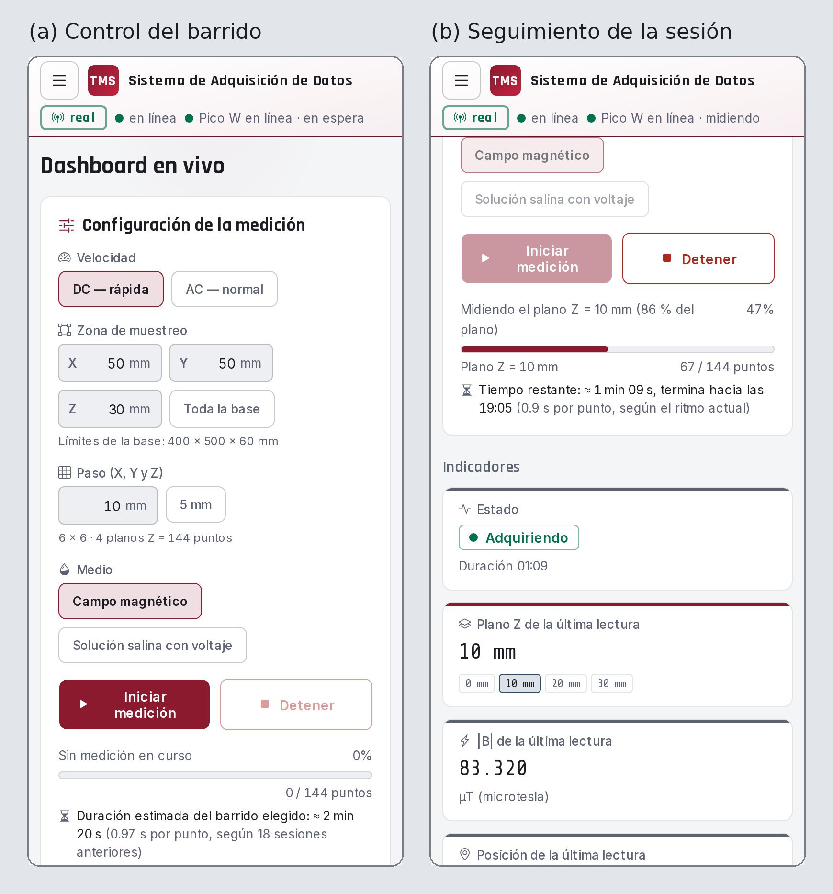
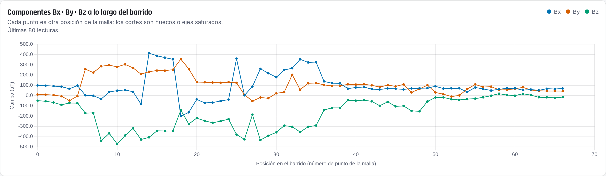
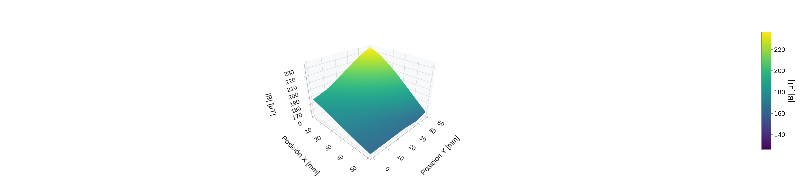

flowchart LR
subgraph PICO["Raspberry Pi Pico 2 W"]
direction TB
I2C["GP0 SDA · pin 1<br/>GP1 SCL · pin 2<br/>3V3 OUT · pin 36<br/>GND · pin 38"]
PX["GP10 PUL · pin 14<br/>GP11 DIR · pin 15"]
PY["GP12 PUL · pin 16<br/>GP13 DIR · pin 17"]
PZ["GP14 PUL · pin 19<br/>GP15 DIR · pin 20"]
PE["GP16 ENA · pin 21<br/>0 = habilitado"]
PA["GP26 ADC0 · pin 31<br/>solo firmware del Hall"]
end
QMC["QMC5883P<br/>0x2C · I2C0 100 kHz"]
HALL["Hall 49E<br/>sensor de prueba de 1 eje"]
TX["TB6600 · eje corto"]
TY["TB6600 · eje largo"]
TZ["TB6600 · eje Z"]
MX["NEMA 17 + T8<br/>0–410 mm sistema (0–205 reales)"]
MY["NEMA 17 + T8<br/>0–562 mm sistema (0–281 reales)"]
MZ["NEMA 17 + T8<br/>0–88 mm sistema (0–44 reales)"]
FUENTE["Fuente de motores<br/>12–24 V CC · por confirmar"]
I2C --- QMC
PA --- HALL
PX --> TX --> MX
PY --> TY --> MY
PZ --> TZ --> MZ
PE --> TX
PE --> TY
PE --> TZ
FUENTE --> TX
FUENTE --> TY
FUENTE --> TZ
Diagrama 07 · fuente de motores y recableado de tierras del shield: por confirmar.
MicroPython, bucle cooperativo con generadores, sin hilos
PIO a 1 MHz + DMA: la mesa se mueve en hardware mientras sale un lote por Wi-Fi
Rampa trapezoidal; Z se mueve después o antes según suba o baje
Vuelve al descanso al terminar, detener, fallar o con Ctrl+C
stateDiagram-v2
[*] --> homing: encender, la posición actual es el descanso
homing --> espera: mesa en (0, 0, 0)
espera --> espera: BOOTSEL vuelve a medir el fondo
espera --> midiendo: el latido trae sesion_activa
espera --> calibrando: el latido trae calibracion
state midiendo {
[*] --> barrido
barrido --> vaciando: malla completa
vaciando --> [*]: búfer confirmado
}
midiendo --> homing: terminó, o el operador detuvo
midiendo --> error: zona fuera del recorrido, sensor o movimiento
calibrando --> homing: calibracion = null
calibrando --> homing: llegó una sesión, que manda
error --> homing: manda lo ya medido y vuelve al descanso
homing --> espera
Fuente: firmware/main.py, firmware/motores.py · versión pico-tms-2.4.
06 · Firmware
Recorrido en serpentina y reanudación
Entre dos puntos solo cambia un índice en ±1: nunca regresa en vacío
Z sube un plano a la vez, alejándose de la bobina
El mismo contrato en el firmware, el servidor y el simulador
Tras un reinicio sigue en ultimo_seq + 1; UNIQUE(sesión, seq) evita duplicados
Vector de prueba del contrato (docs/firmware-pico-w.md §7) · figura Anatomy (b).
07 · Software
Una medición, de punta a punta
sequenceDiagram
autonumber
actor OP as Operador
participant S as Servidor
participant DB as MariaDB
participant P as Pico 2 W
participant N as Navegadores y app
OP->>S: POST /api/sesiones (modo, paso, medio, zona)
S->>DB: INSERT sesión hw con copias de la configuración
S-->>N: SSE sesion iniciada
P->>S: POST /dispositivo/latido (estado espera) cada 5 s
S-->>P: sesion_activa (malla, sensor, inicio, ultimo_seq)
P->>P: valida que la zona cabe en la mesa
loop cada punto de la serpentina
P->>P: mover (PIO + DMA), asentar 300 ms, promediar 10 lecturas
P->>P: guardar en el búfer con su seq
opt 25 lecturas o 3 s
P->>S: POST /dispositivo/mediciones (lote)
S->>DB: INSERT en transacción, UNIQUE sesion_id + seq
S-->>P: aceptadas, duplicadas, rechazadas
S-->>N: SSE medicion (µT y módulo)
end
end
Note over S,DB: seq guardados = puntos esperados
S->>DB: cerrar sesión, puntos recibidos y huecos
S-->>N: SSE sesion finalizada (completa)
P->>P: búfer vacío, vuelve al descanso (0, 0, 0)
P->>S: latido
S-->>P: sesion_activa = null
Latido cada 5 s
Lotes de 25 lecturas o 3 s
Reintento del mismo lote: 0,25 → 8 s
Cierre automático con todos los seq
SSE con id: se recupera lo perdido
Diagrama 03 · figura Anatomy (c), viaje de una lectura.
Roles: administrador, operador, observador; contraseñas con scrypt
Token de la Pico guardado como SHA-256
Cada sesión guarda su configuración, versiones, puntos y huecos
Simulador con la espira exacta (integrales elípticas por AGM)
flowchart LR
subgraph RED["Red Wi-Fi"]
PICO["Pico 2 W<br/>cliente HTTP"]
subgraph HOST["Servidor"]
NGX["Nginx :443<br/>HTTPS · quita /api"]
EXP["Express :4000<br/>HOST 0.0.0.0 en las pruebas"]
DB[("MariaDB :3306<br/>solo 127.0.0.1")]
end
LAP["Laptops<br/>navegador"]
TEL["Teléfonos<br/>navegador o app"]
end
PICO -- "POST /api/dispositivo/... :4000" --> EXP
LAP -- HTTPS --> NGX
TEL -- HTTPS --> NGX
NGX -- "proxy_pass 127.0.0.1:4000" --> EXP
TEL -- "app TMS Monitor · HTTP :4000" --> EXP
EXP --> DB
Diagramas 02 y 06 (entidad-relación, en 02-diagramas/index.html) · dossier §4–5.
07 · Software
Web y app en vivo

Control de la medición

Navegador del teléfono

App Android

Bx, By, Bz en vivo
Capturas reales del 2026-11-17 (sesión 93), anteriores a la escala ×2 y al cambio de nombres X ↔ Y. Otras: img/cap3_mapa3d.png, img/cap3_historial.png.
07 · Software
Previsualizador de la bobina
Tres sliders llevan la mesa a un punto
Campo en vivo y medidor del rango: saturado · cerca del tope (≥ 80 %) · señal baja (< 2 %)
Sirve para ajustar la corriente antes de medir; no guarda nada
Con 150 ms entre peticiones la Pico se apagaba: ahora 1 por segundo
Prueba en la mesa: por confirmar · falta una captura.
sequenceDiagram
autonumber
actor OP as Operador
participant W as Página Previsualizar bobina
participant S as Servidor
participant P as Pico 2 W
OP->>W: Empezar a previsualizar
W->>S: POST /api/calibracion (descanso 0, 0, 0)
P->>S: latido (estado espera)
S-->>P: calibracion activa con objetivo y sensor
loop mientras la calibración está activa
OP->>W: suelta un slider X, Y o Z
W->>S: PATCH /api/calibracion (objetivo en mm del sistema)
P->>S: POST /dispositivo/calibracion (moviendo)
S-->>P: objetivo vigente
P->>P: mover_a con límites y orden de ejes, asentar 300 ms
P->>S: POST /dispositivo/calibracion (en posición, cuentas, saturado) máximo 1 por segundo
S->>S: cuentas a µT con el sensor vigente, sin guardar
S-->>W: SSE calibracion (Bx, By, Bz, módulo)
W-->>OP: medidor del rango con avisos saturado, cerca del tope y señal baja
end
OP->>W: Terminar y volver al dashboard
W->>S: DELETE /api/calibracion
P->>S: siguiente petición
S-->>P: calibracion = null
P->>P: vuelve al descanso (X e Y primero, Z al final)
Diagrama 08 · figura Anatomy (d).
08 · Resultados
Resultados con la mesa real
64
sesiones reales (y 33 simuladas)
5 402
lecturas reales guardadas (30 667 en total)
26
barridos reales completos
777
puntos en el barrido más grande, en 9 min 26 s
0,97 s
por punto (mediana; de 0,72 a 1,53 s)
0
puntos perdidos desde la sesión 70
Sesión
Firmware
Zona real (mm)
Paso
Puntos
Duración
s/punto
93
2.2
25 × 25 × 15
5 mm
144
2 min 25 s
0,95
113
2.3
90 × 50 × 0
2,5 mm
777
9 min 26 s
0,73
124
2.4
100 × 200 × 5
10 mm
231
4 min 23 s
1,09
126
2.4
125 × 200 × 15
15 mm
252
5 min 36 s
1,34
Fuente: consultas SELECT a tms_db del 2026-11-25 (01-cifras-reales.md §6). Zona como eje corto × eje largo × Z (mm del sistema ÷ 2). Los 92 huecos anteriores fueron saturaciones con el firmware 2.0.
08 · Resultados
El campo medido

Sábana 3D de la sesión real 74
análisis físico del campo medido: forma, máximos, comparación con el modelo de la espira, incertidumbre
09 · Pruebas
Pruebas y problemas resueltos
Unitarias del servidor
71/71
Firmware en el PC
32/32
Integración (base de prueba)
11/11
Firmware del Hall
TODO BIEN
Sesiones con hardware
64
Cuelgue del DMA en el RP2350: dirección de CHAN_ABORT del RP2040
Reinicios por tierras del shield: recableado
Apagones al previsualizar: 6 peticiones/s → 1 por segundo
Fuente: pruebas ejecutadas el 2026-11-25 (integración: 2026-11-24) · dossier §7 y §9.
10 · Limitaciones
Limitaciones
Apagones esporádicos de la Pico 2 W, sin diagnóstico. Sospechas: alimentación o contacto del shield, picos del radio Wi-Fi, ruido de los TB6600.
Escala ×2 corregida solo en la web; la causa mecánica, por confirmar.
Sin finales de carrera: la referencia es la posición al encender.
Error posicional (requisito ±1 mm) todavía sin medir.
Sensores de prueba: no miden el pulso de la bobina TMS.
Servidor en la laptop; la app sin los cambios del 2026-11-24.
Fuente: CLAUDE.md §0.9 · dossier §10.
11 · Conclusiones
Conclusiones
conclusiones formales del trabajo escrito, una por objetivo
El sistema mide, guarda y muestra en vivo sin perder lecturas
Funciona con la mesa real desde la versión 2.0
Simulación y realidad comparten el mismo camino de datos
12 · Trabajo futuro
Trabajo futuro
Diagnosticar los apagones (voltaje de la Pico con osciloscopio durante el Wi-Fi y los movimientos; alimentación separada)
Corregir la escala en el firmware o en la mecánica
Finales de carrera y homing real; medir el error posicional
Un sensor adecuado al pulso TMS
Instalación en la Raspberry Pi 5; actualizar la app